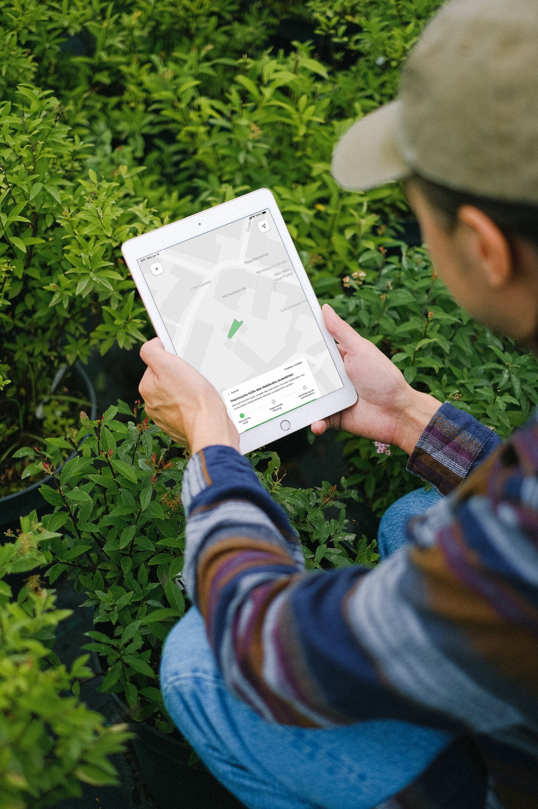
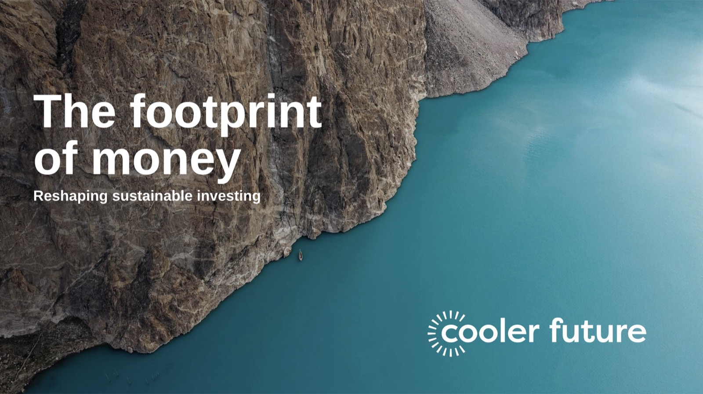

Good design starts with questions.
Ten years designing digital products for mission-driven companies. End to end, across research, strategy and delivery. The work I care most about is the work that creates positive impact.
Selected work: four case studies
- Disciplines
- UX Research · Service Design · Information Architecture · Interaction Design
- Specialties
- Digital-to-Physical Integration · Operational Tooling · Automation
- Domains
- Climate Tech · Digital Health · Urban Mobility · Regulated Products
Clients & employers
Selected · 06


Selected work
2016–2026 · 04
Enter
I designed the on-site capture flow that lets an energy advisor survey a house in a single visit and generate the official subsidy report from what they recorded.
View case study
Coup Mobility
I rebuilt the rider app around the three moments that actually decided a trip: finding a moped with enough charge, unlocking it, and ending the rental legally. I also designed the dispatcher and field-worker tools that keep the fleet on the street.
View case study
Cooler Future
I took a sustainable investing app from a blank file to public launch, including the impact model that shows a first-time investor what their €20 actually does to emissions.
View case study
Vivy
As founding designer I built the patient side of an Allianz-backed health record, including the request flow that gets a document out of a doctor's practice and into the patient's own encrypted file.
View case studyAbout
02 / 04How I think about the work.
Ten years of product design, mostly in complex domains: digital health, sustainable investing, urban mobility. The common thread is building products people depend on, increasingly for companies creating positive environmental impact.
Research comes first. It is far cheaper to learn before building than after launch. Time with real users usually reveals the right direction; the job is to ask the right questions, reduce complexity, and turn insight into products that are clear and usable.
My experience ranges from being the sole designer in an early-stage startup to working inside large cross-functional teams, leading projects from research through to delivery.
Based in Berlin. Open to full-time and part-time roles.
Strategy
- Product strategy
- Service design
- Customer journeys
- Design systems
Execution
- UX research
- Interaction design
- Prototyping
- Design QA
Domains
- Climate tech
- Healthcare
- Enterprise
- Regulated products
Languages
- English (native)
- German (B2, working proficiency)
The process
04 stepsListen first
Interviews, diary studies, watching people actually use the thing. No sketching until there’s a clear picture of what’s going wrong.
Make it concrete early
Storyboards and rough wireframes before anything polished. It’s easier to change direction while the work still looks unfinished.
Test with real people
Prototypes realistic enough to get honest reactions, then keep iterating until the thing actually works.
Stay until it ships
Working closely with engineers through the build. If a design doesn’t hold up once it’s coded, it wasn’t done.